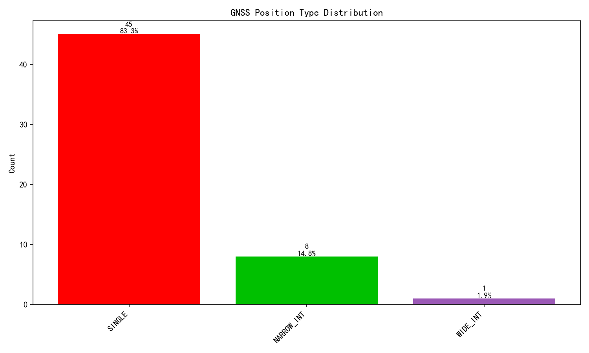
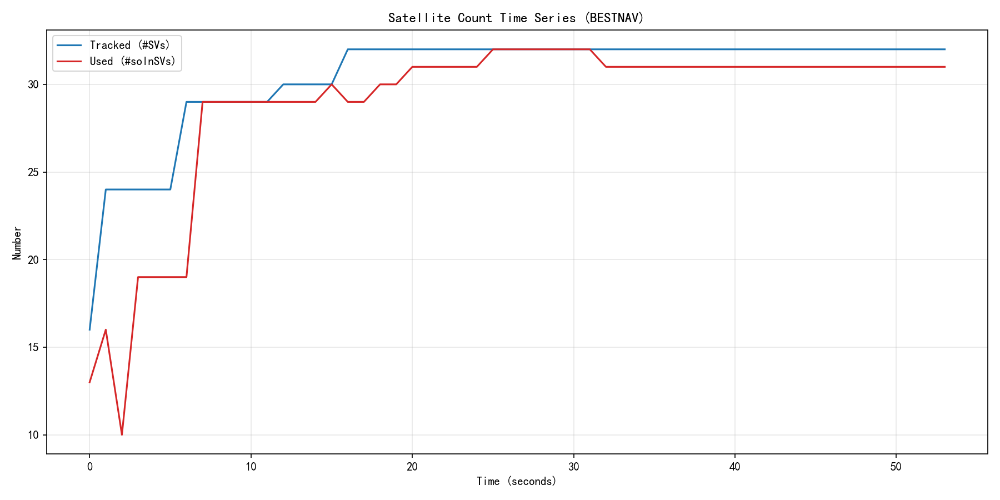
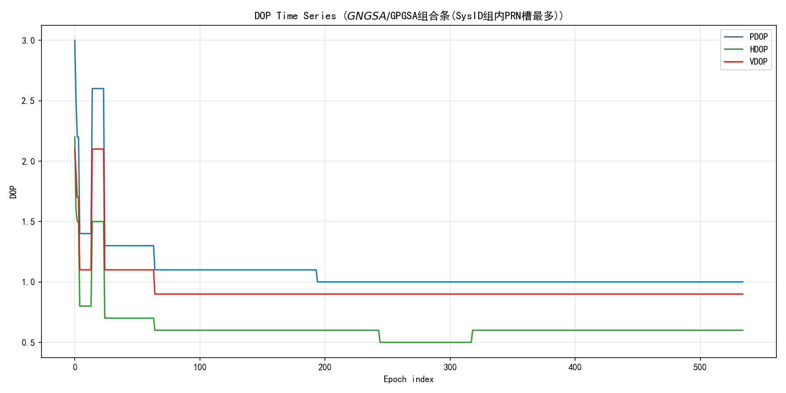
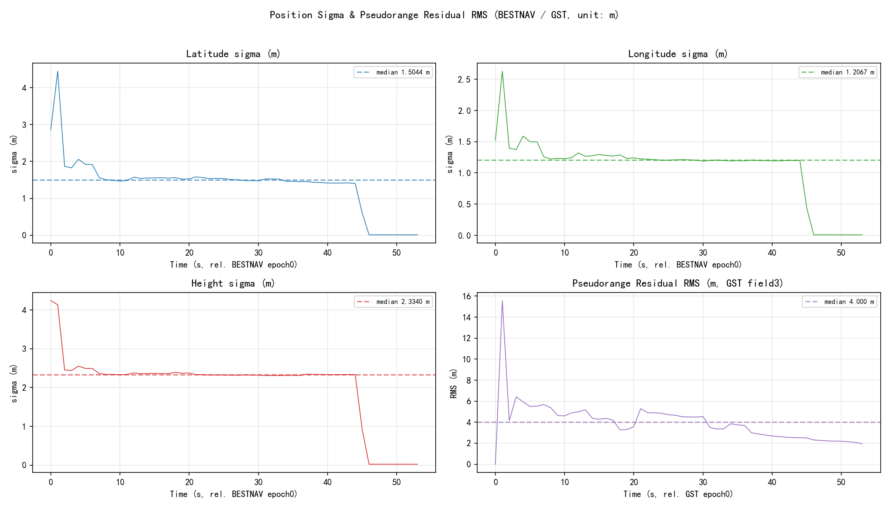
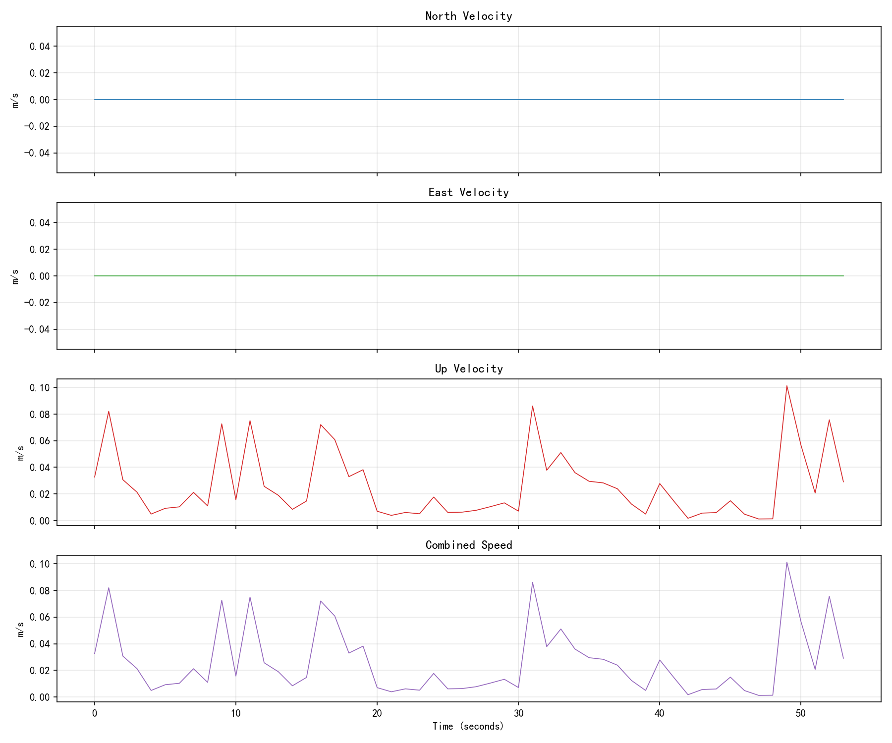
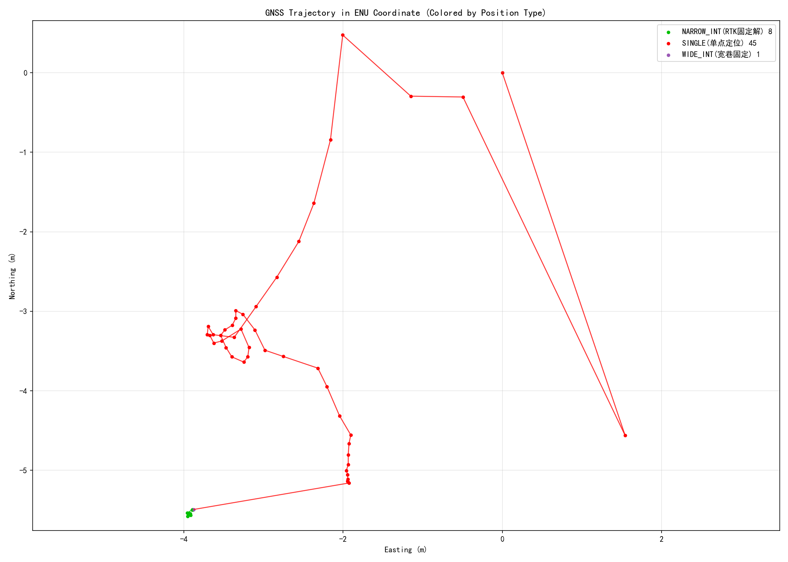
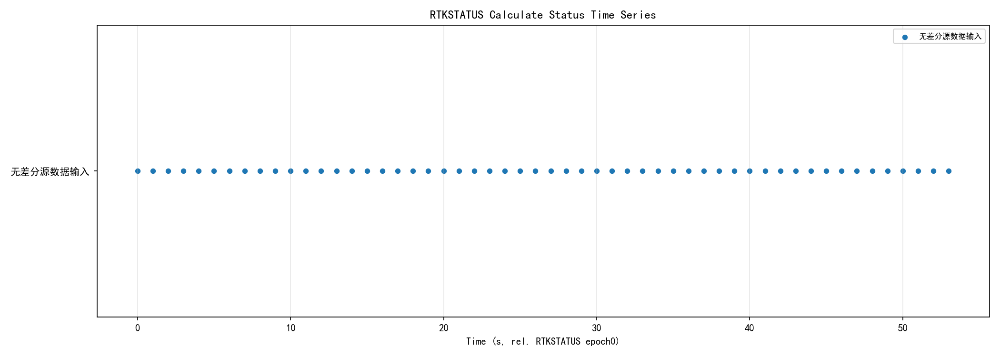
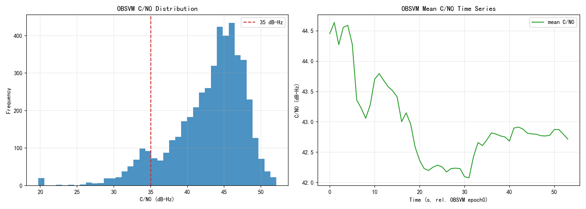

输入:1019beidou2.log | 生成时间:2026-10-19 15:28:24 | 协议依据:N4 Products Commands and Logs Reference Book R1.15
| 项目 | 结果 |
|---|---|
| ASCII合法报文 | 11406条 |
| 原始行数 | 14878行 |
| OBSVMB合法二进制历元 | 54个；CRC失败块0个 |
| ASCII残片/不可识别行 | 1行 |
| BESTNAVA时间跨度 | 53.0s |
| 报文 | 实测头 | 条数 | 设定周期s | 实际周期s | 实际Hz | 丢帧率% | 状态 | 备注 |
|---|---|---|---|---|---|---|---|---|
| BESTNAVA | #BESTNAVA | 54 | 0.100 | 1.000 | 1.000 | 0.000 | warn | 实际周期1.000s与设定0.100s偏差超5% |
| GGA | $GNGGA | 539 | 0.100 | 0.100 | 10.000 | 0.000 | ok | - |
| GSA | $GPGSA,$GNGSA | 2537 | 0.100 | - | - | - | ok | 无可用时间戳，未计算周期 |
| GRS | $GPGRS,$GNGRS | 8060 | 0.100 | 0.100 | 10.000 | 0.000 | ok | - |
| GSV | OBSVMB | 0 | 1.000 | - | - | - | error | 报文缺失: 未在数据流中找到 |
| GST | $GNGST | 54 | 1.000 | 1.000 | 1.000 | 0.000 | ok | - |
| SATSINFOA | #SATSINFOA | 54 | 1.000 | 1.000 | 1.000 | 0.000 | ok | - |
| BESTSATA | #BESTSATA | 54 | 1.000 | 1.000 | 1.000 | 0.000 | ok | - |
| RTKSTATUSA | #RTKSTATUSA | 54 | 1.000 | 1.000 | 1.000 | 0.000 | ok | - |
| OBSVMB | OBSVMB | 54 | 1.000 | 1.000 | 1.000 | 0.000 | ok | - |

固定解率:16.7%
| Pos Type | 数量 | 占比 |
|---|---|---|
| SINGLE | 45 | 83.3% |
| NARROW_INT | 8 | 14.8% |
| WIDE_INT | 1 | 1.9% |
| Sol Status | 数量 | 占比 |
|---|---|---|
| SOL_COMPUTED | 54 | 100.0% |


| 指标 | 均值 | 最小 | 最大 |
|---|---|---|---|
| 跟踪卫星 #SVs | 30.48148148148148 | 16 | 32 |
| 参与解算 #solnSVs | 28.814814814814813 | 10 | 32 |
| PDOP | 1.095 | 1.000 | 3.000 |
| HDOP | 0.622 | 0.500 | 2.200 |
| VDOP | 0.948 | 0.900 | 2.100 |
DOP源：$GNGSA/$GPGSA组合条(SysID组内PRN槽最多)。GSA无UTC时间戳，图横轴为组合条序号，不伪装成精确时间轴。

| 指标 | 均值 | 中位 | 最小 | 最大 |
|---|---|---|---|---|
| 纬度σ m | 1.382 | 1.504 | 0.011 | 4.450 |
| 经度σ m | 1.083 | 1.207 | 0.008 | 2.629 |
| 高度σ m | 2.051 | 2.334 | 0.022 | 4.243 |
| GST伪距残差RMS m | 4.003 | 4.000 | 0.000 | 15.570 |
| GRS逐星残差 m | 1.195 | 0.600 | 0.000 | 10.900 |


平均速度 0.026 m/s；最大速度 0.101 m/s。ENU以首个有效BESTNAV点为参考点，仅用于轨迹形状，不是精度误差。
基站ID 1793；差分龄期平均1.000s，最大1.000s。

| RTK计算状态 | 数量 |
|---|---|
| 无差分源数据输入 | 54 |

OBSVM 54历元/4759频点观测；平均C/N0 42.868 dB-Hz；低C/N0(<35)占比9.4%；locktime归零/消失事件10个；重捕获事件47个。事件判定仅基于OBSVM实测locktime，1Hz采集时间分辨率为1s。
检测到 54 个SATSINFOA历元。该ASCII变长频率段在手册表格中未给出足够无歧义的切分规则，为避免字段猜测，本版不生成天空分布/SNR统计。